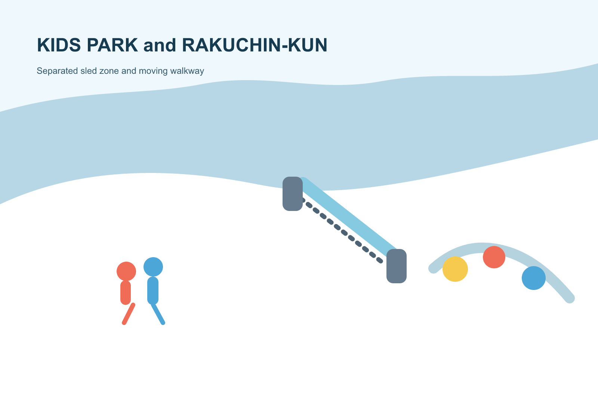
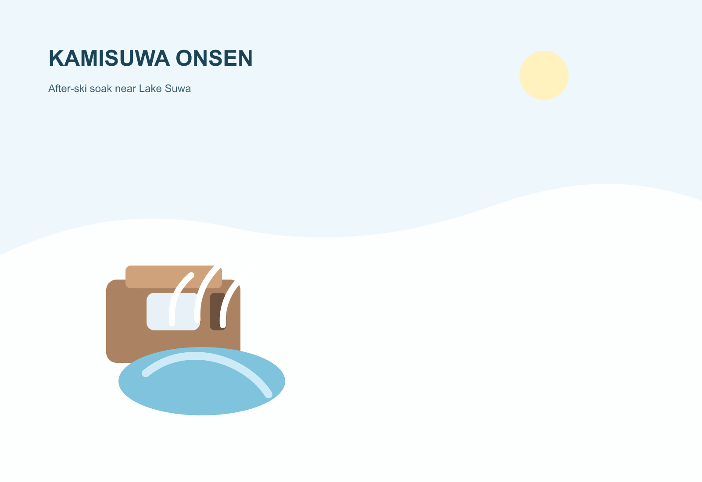

動く歩道「らくちんくん」× スノーキッズ霧ヶ峰
50mの動く歩道が、そり遊びや初めてのスキー移動を大幅に楽にします。キッズパークではスノーレーサーやチューブも体験でき、スキーコースと安全に分離されています。
ゲレンデマップ長野県諏訪市 · 霧ヶ峰高原
360度の山並みと、驚きの低価格——家族の雪山デビューに。
1日券 ¥2,610 未就学児リフト無料 3コース更新 12/24 8:30
第1リフト
運行中
ペア · メイン斜面
第2リフト
運行中
ペア · 中級エリア
天候
高晴天率
高原 · なだらかバーン
らくちんくん
運行中
動く歩道50m · 初心者移動

Family Entry
富士山をはじめ雄大な山並みを一望する霧ヶ峰高原。初級・中級者とファミリー層に特化し、雪山デビューと安全な雪遊びに最適化されたエントリー向けゲレンデです。
Bundle
大人1日券¥2,610、小中学生・シニア¥1,570。未就学児は保護者同伴で無料。らくちんくんのみ¥520、キッズパーク遊具セット¥1,010と、雪山デビューの負担を極小化しています。

2-Day Model
中央道諏訪ICから約30〜40分。首都圏・中京圏からの日帰りも可能で、1泊2日なら温泉と組み合わせた満足度の高い行程になります。
FAMILY · VALUE · PANORAMA01
諏訪IC・上諏訪
中央道から霧ヶ峰線経由
02
霧ヶ峰スキー場
1日券¥2,610 · 未就学児無料
03
キッズパーク
らくちんくんと雪遊び遊具
04
上諏訪温泉
下山30〜40分 · 湖畔の名湯
05
諏訪グルメ
うなぎ・そば · 地酒と味噌
Access
中央道諏訪ICから約17km · 30〜40分 · JR上諏訪駅から車・タクシー約30〜40分
TEL 0266-53-1664（霧ヶ峰スキー場）
上諏訪駅からのバス · 冬季ダイヤは要確認